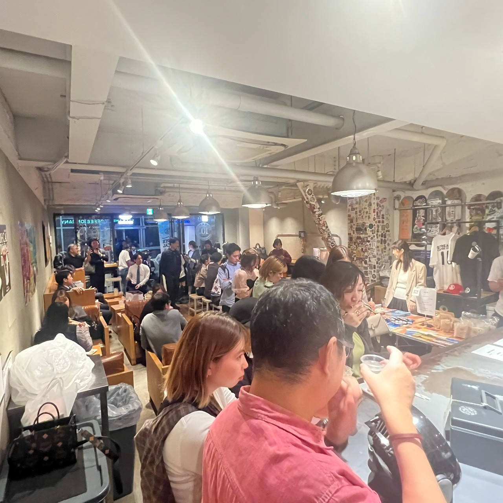
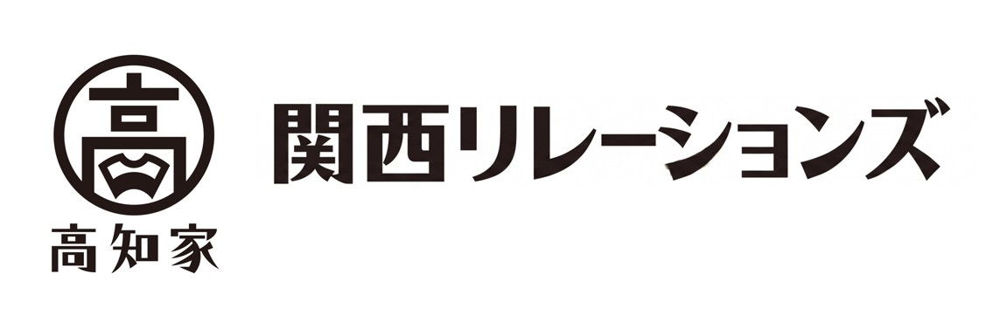
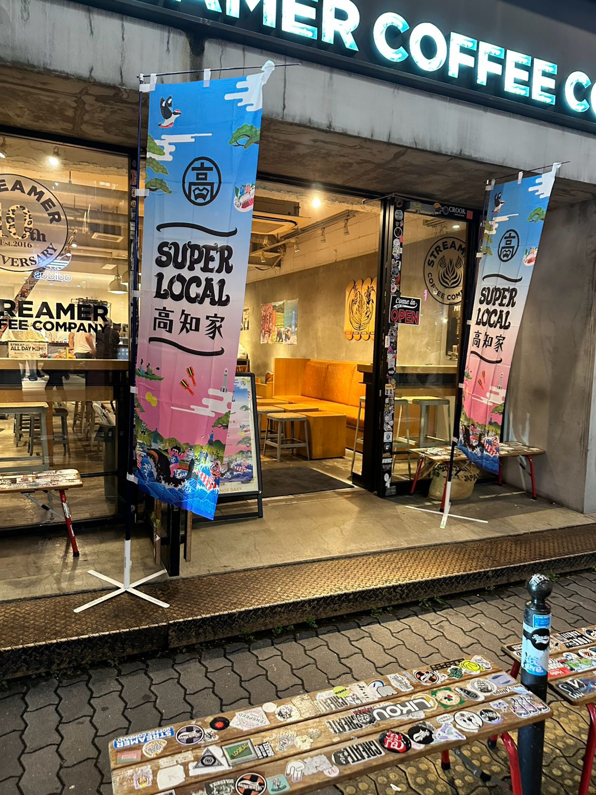

TOSA TO SAKE高知のお酒と食材が、人をつなぐ。
第1回 とさとさけ
心斎橋のストリーマーコーヒーカンパニーで、高知のお酒と、アンテナショップで販売されている高知の食材を楽しむイベントを開催しました。
会場には多くの方が集まり、食とお酒を囲んで交流が生まれる、大盛況の一夜となりました。
- 開催日
- 2026年10月24日
- 会場
- ストリーマーコーヒーカンパニー（心斎橋）
- 主催
- 高知家関西リレーションズ（LOCALSHIFTのプロジェクト）
LOCALSHIFTの取り組み
高知家関西リレーションズ
高知と関西をつなぐ、LOCALSHIFTのプロジェクトです。

LOCALSHIFTのプロジェクト
ABOUT
高知家関西リレーションズは高知家関西アンバサダーを中心とした組織です。
私たちの最大の財産は、人であり、信頼であり、共感です。
高知、関西の豊かな文化と知恵を培い、関わるすべての人々と固い絆で結ばれることで、持続可能な未来への挑戦を続けます。
単なる一時の利益を追うのではなく、時代を超えて選ばれ続ける確かな価値を社会とともに創り出します。
運営するLOCALSHIFTについてACTIVITY
これまでの活動と、これからの開催予定をご紹介します。


TOSA TO SAKE高知のお酒と食材が、人をつなぐ。
心斎橋のストリーマーコーヒーカンパニーで、高知のお酒と、アンテナショップで販売されている高知の食材を楽しむイベントを開催しました。
会場には多くの方が集まり、食とお酒を囲んで交流が生まれる、大盛況の一夜となりました。
INTERVIEW
高知で活躍する人を取材し、
インタビュー記事を掲載していきます。
第1回の記事は、公開まで少々お待ちください。
CONTACT
イベントへの参加や協力、取材のご相談など、お気軽にご連絡ください。
メールで相談するボタンを押すと、お使いのメールアプリが開きます。
アプリを利用していない方は、こちらのアドレスへお送りください。